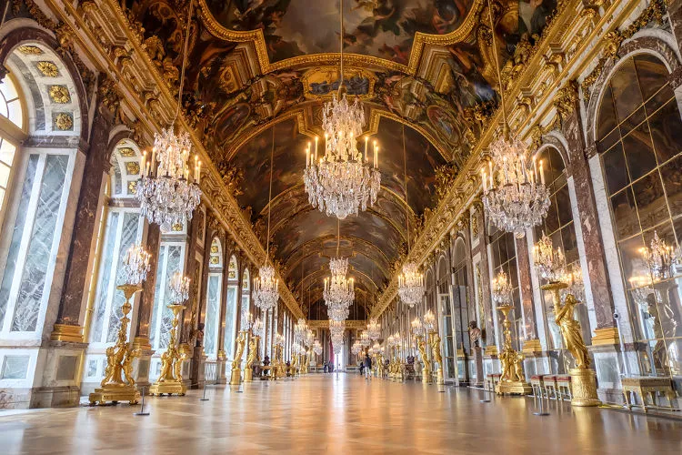
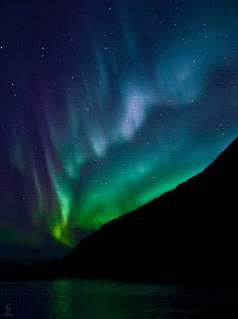
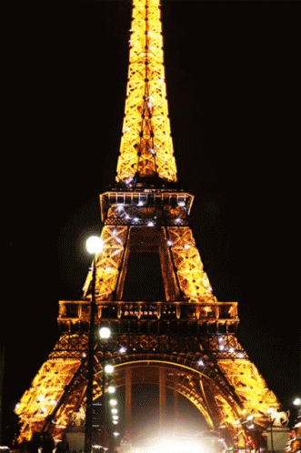

Simplesmente uma visão linda e uma paz, fizeram uma muralha gigantesca de 21.000km

Um monumento que parece ter vindo do céu, lindo

Além de você conseguir comer comidas deliciosas na Itália, vê esse monumento lindo e cheio de histórias dos Romanos

Super histórico, onde vemos grandes construções feitas pelos nossos antepassados

Cidade dos antigos povos Incas, bonita e com muita cultura antiga

Brasileiro e lindo, um lugar para marcar a vida

Há obras lindas e incríveis de artistas de todo o mundo

Um monumento histórico que deveria ser visto por todos, muito lindo

Lindo, encanta tudo e todos, a beleza natural espressada em um fenômeno

Acho que eu gosto da beleza e luzes da torre, para mim é mágico esse constrate entre o céu escuro e o brilho dela